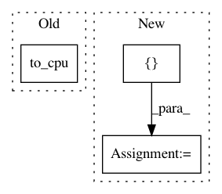

08ed4e477612d49e27baa7bad64be75110a5db0c,agents/dqn.py,DQN,act,#DQN#Any#Any#Any#,222
Before Change
action = qout.sample_epsilon_greedy_actions(self.epsilon)
q = qout.evaluate_actions(action)
action = cuda.to_cpu(action.data)[0]
if self.t % 100 == 0:
logger.debug("t:{} a:{} q:{} qout:{}".format(
self.t, action, q.data, qout))
After Change
action = self.explorer.select_action(
self.t, lambda: cuda.to_cpu(qout.greedy_actions.data[0]))
action_var = chainer.Variable(self.xp.asarray([action]))
q = qout.evaluate_actions(action_var)
if self.t % 100 == 0:
logger.debug("t:{} a:{} q:{} qout:{}".format(
In pattern: SUPERPATTERN
Frequency: 3
Non-data size: 3
Instances
Project Name: chainer/chainerrl
Commit Name: 08ed4e477612d49e27baa7bad64be75110a5db0c
Time: 2016-06-09
Author: muupan@gmail.com
File Name: agents/dqn.py
Class Name: DQN
Method Name: act
Project Name: chainer/chainercv
Commit Name: 90b78b1379b3423aa3b4b5d0de7313f88bda23ab
Time: 2019-02-17
Author: yuyuniitani@gmail.com
File Name: chainercv/utils/mask/mask_to_bbox.py
Class Name:
Method Name: mask_to_bbox
Project Name: eriklindernoren/PyTorch-YOLOv3
Commit Name: 9b0a0dd6fe7b4ac021d91acc6b4f96b403dd6b67
Time: 2019-04-26
Author: eriklindernoren@live.se
File Name: models.py
Class Name: Darknet
Method Name: forward